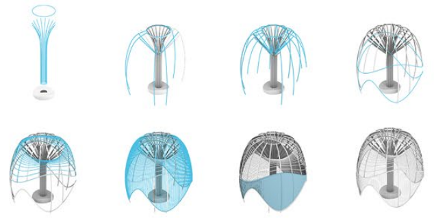
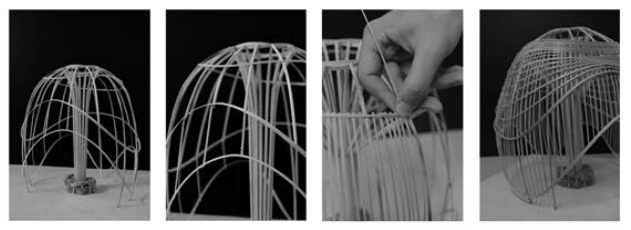
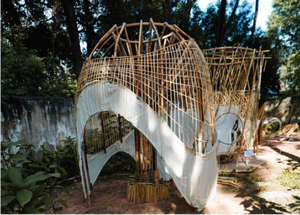

设计简介：营建比赛的主题是传统工艺。我们的作品概念来自于中国传统竹伞，通过模仿形成稳固的结构，作品的表皮借鉴了竹编灯笼的工艺。

结构和搭建过程

1:20模型搭建过程

1:2模型完成效果
Design Concept: The theme of the competition is traditional craftsmanship. Our concept draws inspiration from the traditional Chinese bamboo umbrella, emulating its form to create a stable structure. The surface texture of the work references the craftsmanship of woven bamboo lanterns.
Structure and Construction Process
1:20 Model
1:2 Model
[] []